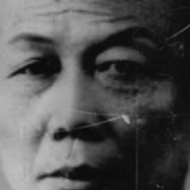
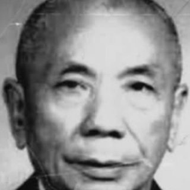
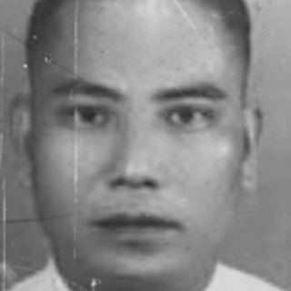
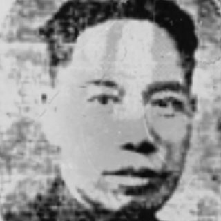
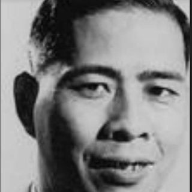
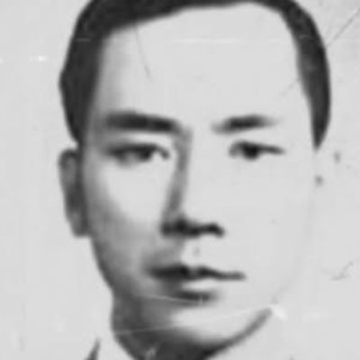
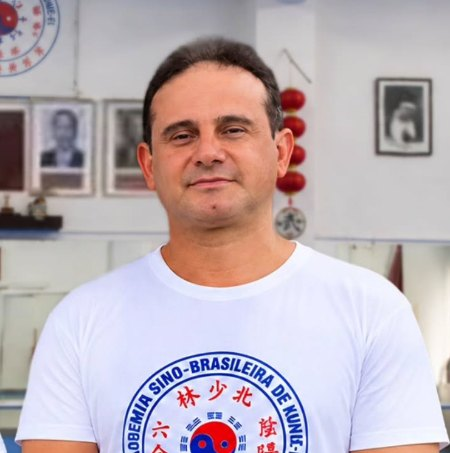
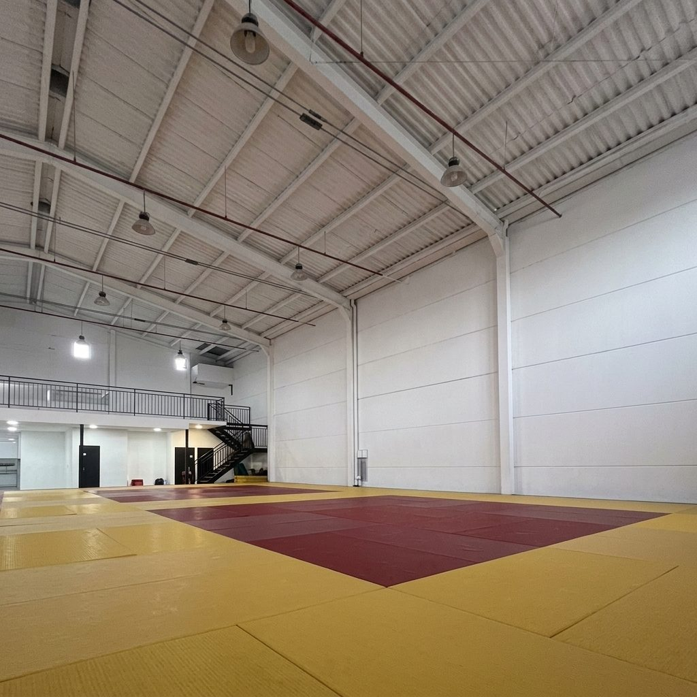
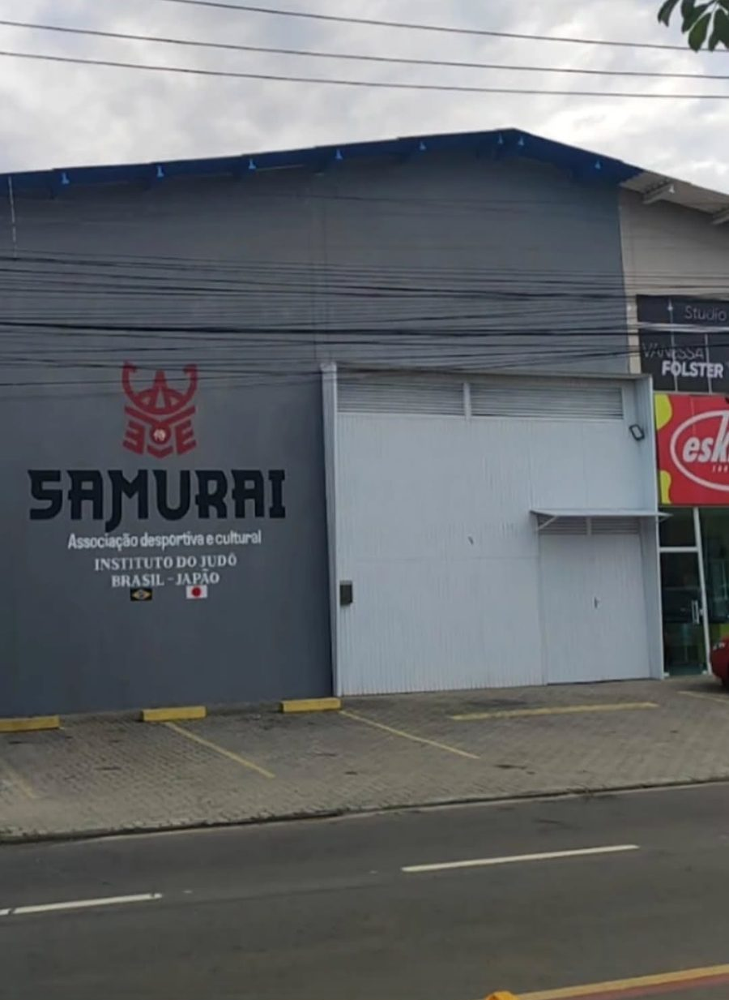

Kung fu de linhagem, em Palhoça.
Doze estilos tradicionais do sistema Chan Kowk Wai, no Jardim Eldorado.
R$ 190 por mês, sem taxa de matrícula.
Quem ensinou quem
Cada estilo chegou a Palhoça de mão em mão. Estes são os mestres de cada elo.
极柔软，然后极坚刚Alcance a extrema suavidade e só então alcançará a extrema firmeza.
-
顧汝章 Gù Rǔzhāng
Shaolin do Norte
Sistematizou o Shaolin do Norte. Sua fama dispensa comentários.
-

譚三 Tán Sān
Choy Li Fut
A ele se liga historicamente o ramo Běi Shèng (北勝).
-

嚴尚武 Yán Shàngwǔ
Shaolin do Norte e Choy Li Fut (Yim Sheung Mo)
Ensinou a Chan Kowk Wai o ramo Běi Shèng do Choy Li Fut.
-

甄耀超 Zhēn Yàochāo
Choy Li Fut
Ensinou a Chan Kowk Wai a linhagem Xióng Shèng (雄勝).
-

甄炎初 Zhēn Yánchū
Choy Li Fut
-
傅振嵩 Fú Zhènsōng
Bāguàzhǎng e Xíngyìquán
Ensinou a Chan Kowk Wai os dois estilos internos.
-
Luo Guangyu
Louva-a-Deus
-

黃漢勛 Huáng Hànxūn
Louva-a-Deus Sete Estrelas (Wong Hon Fan)
O “Rei do Louva-a-Deus” transmitiu o estilo a Chan Kowk Wai.
-
劉法孟 Liú Fǎmèng
Garra de Águia
Transmitiu o Garra de Águia à Academia Sino-Brasileira.
-

陳國偉 Grão-Mestre Chan Kowk Wai
Academia Sino-Brasileira, matriz em São Paulo
10º grau em cinco estilos pela World Convention of Wushu & Kungfu Masters of the Century, no Canadá.
-

Prof. Fernando Senna, em Palhoça
Pratica kung fu desde 1987. Campeão brasileiro e catarinense de kungfu wushu.
Doutor em filosofia, pós-doutor em ética médica, especialista em psicologia e ciências da linguagem, professor do ensino superior em SC.
Doze estilos, ensinados inteiros
Abra um estilo para ler sua história.
-
北少林 Shaolin do NorteBěi Shàolín Chutes altos e saltos.
O estilo Shaolin do Norte (Běi Shàolín ou Bak Siu Lam Kuen) é um dos sistemas mais tradicionais das artes marciais chinesas (Wǔshù, 武術). Preservado no Brasil pelo Grão-Mestre Chan Kowk Wai através da Academia Sino-Brasileira (Zhōng Bā Wǔshù Xuéyuàn, 中巴武術學院), com matriz em São Paulo, o estilo originou-se do lendário Templo Shaolin e foi sistematizado pelo famoso Mestre Gu Yu Cheung (Gǔ Yùzhāng, 顧汝章). A prática caracteriza-se pela agilidade, movimentos amplos e complexos, destacando-se pelo uso de chutes altos, rasteiras, saltos, imobilizações e projeções (Shuāijiāo, 摔跤). Seus treinos combinam o combate à curta e longa distância, integrando técnicas de chutes, punhos, cotovelos, joelhos e o manejo de dezenas de armas tradicionais. A formação técnica estrutura-se em 10 formas sequenciais de mãos vazias (Tàolù, 套路), complementadas por rotinas fundamentais como Lián Bù Quán (連步拳) e Tán Tuǐ, e formas especiais avançadas (serpente, macaco, bêbado, etc.). Além do aspecto marcial e da aplicação em combate livre (Sandǎ, 散打), o estilo enfatiza o fortalecimento do corpo, a circulação da energia vital (Qìgōng, 氣功) e a disciplina.
-
蔡李佛 Choy Li FutCàilǐfó Ataque contínuo, do sul.
O estilo Càilǐfó (蔡李佛, Choy Li Fut) é um dos sistemas de Kungfu (功夫, gōngfu) mais populares do sul da China. Criado por Chén Xiǎng (陳享) durante a dinastia Qīng, o estilo unifica o aprendizado de seus mestres Cài Fú (蔡褔), Lǐ Yǒushān (李友山) e a influência do monge Qīng Cǎo (青草僧), homenageado pelo termo Fó (佛, Buda). Desenvolvido no contexto revolucionário para formar lutadores rápidos e eficazes contra os Manchus, o Càilǐfó foca na objetividade, na agressividade e no combate direto. Ao contrário dos sistemas defensivos, seu objetivo principal é o ataque contínuo, com forte ênfase nas técnicas de mão, braços soltos e pontos vitais. Mestre Chan Kowk Wai (陳國偉) aprendeu a linhagem Xióng Shèng (雄勝) de Zhēn Yàochāo (甄耀超) e a ramificação Běi Shèng (北勝) com Yán Shàngwǔ (嚴尚武), esta última ligada historicamente ao Mestre Tán Sān (譚三). No treino tradicional, a prática combina fundamentos de combate, as 11 formas de mãos (Jiàzi, 架子) e diversas armas (Wǔqì, 武器), unindo a eficiência marcial ao condicionamento do corpo.
-
七星螳螂 Louva-a-Deus Sete EstrelasQīxīng Tángláng Ganchos de mão, velocidade.
O estilo Louva-a-Deus Sete Estrelas é um tradicional sistema de Kungfu ensinado na Academia Sino-Brasileira. Transmitido ao Grão-Mestre Chan Kowk Wai (陳國偉) pelo renomado mestre Huáng Hànxūn (黃漢勛), conhecido como o “Rei do Louva-a-Deus”, o estilo foi criado por Wáng Lǎng (王朗). Suas técnicas destacam-se pela alta velocidade, defesas com ganchos de mão (Tángláng Shǒu, 螳螂手), travamentos de articulação (Qínná, 擒拿) e esquivas. A prática integra golpes rápidos de perna com cotoveladas e joelhadas unidas às técnicas de quedas. O treino abrange mais de 30 formas de mãos vazias (Tàolù, 套路) e uso de armas tradicionais (Wǔqì, 武器).
-
八卦掌 BāguàzhǎngPa Kua Caminhada em círculo.
O estilo Bāguàzhǎng (“Técnica de Palma baseada nos Oito Trigramas”) é uma das principais artes marciais internas ensinadas na Academia Sino-Brasileira. Preservado no Brasil pelo Grão-Mestre Chan Kowk Wai (陳國偉), que aprendeu o sistema com o Mestre Fú Zhènshōng (傅振嵩), o estilo foi criado no século XIX por Dǒng Hǎichuān (董海川) com base nos princípios do Yì Jīng (易經). Sua característica marcante é a caminhada em círculo (Zhuàn Zhǎng, 轉掌) aliada a esquivas espirais, permitindo contornar o oponente e atacar por ângulos cegos, com ênfase em torções e imobilizações. Diferente de estilos focados no punho, prioriza o uso de palmas abertas (Zhǎng, 掌), trocas de base com projeções e chaves articulares (Qínná, 擒拿). O treino combina o cultivo da energia interna (Qìgōng, 氣功), sequências técnicas de mãos e armas tradicionais (Wǔqì, 武器), unindo harmonia mental, agilidade e eficiência defensiva no combate livre (Sǎndǎ, 散打).
-
形意拳 XíngyìquánHsing I Ataque em linha reta.
O estilo Xíngyìquán é uma das mais antigas artes marciais internas (Nèijiā, 內家) ensinadas na Academia Sino-Brasileira. Preservado pelo Grão-Mestre Chan Kowk Wai (陳國偉), que aprendeu o sistema com o Mestre Fú Zhènshōng (傅振嵩), o estilo é atribuído historicamente ao lendário General Yuè Fēi (岳飛) e desenvolvido por Jī Lóngfēng (姬龍峰). Caracteriza-se por uma postura explosiva e direta, priorizando ataques em linha reta (Sān Tǐ Shì, 三體式) que combinam ataque e defesa em um único movimento. Sua teoria baseia-se nos Cinco Elementos (Wǔ Xíng, 五形: Metal, Madeira, Água, Fogo e Terra) e na imitação das características de 12 Animais (Shí’èr Xíng, 十二形). O treino foca na união da mente (Yì, 意) com a força física (Lì, 力), de onde se origina o nome do estilo xing yi, promovendo a emissão de força elástica (Fājìn, 發勁) na aplicação prática em combate livre (Sǎndǎ, 散打).
-
太極拳 Tàijíquán, estilo YángTai Chi Lento, contínuo, empurrar mãos.
O estilo Yáng shì Tàijíquán (楊氏太極拳, Tàijí do estilo Yáng) é uma das artes marciais internas integradas ao ensino da Academia Sino-Brasileira. Preservado no Brasil pelo Grão-Mestre Chan Kowk Wai (陳國偉), o estilo foi fundado por Yáng Lùchán (楊露禪) e popularizado por seu neto Yáng Chéngfǔ (楊澄甫). Caracteriza-se por movimentos lentos, suaves, contínuos e expansivos, priorizando a postura ereta, o relaxamento corporal (Sōng, 鬆) e a intenção mental (Yì, 意) sobre a força bruta. Embora amplamente praticado para a saúde e longevidade, preserva sua essência marcial através de formas (Tàolù, 套路), sequências de armas como a espada (Jiàn, 劍) e o treino de empurrar mãos (Tuīshǒu, 推手). A prática busca harmonizar as forças Yīn e Yáng (陰陽), promovendo a circulação do Qì (氣), a estabilidade mental e a eficiência na absorção e redirecionamento de forças no combate. Inclui uma metodologia de técnicas de luta específica do estilo, com ênfase em imobilizações.
-
鷹爪番子拳 Garra de ÁguiaYing Jow Pai Agarres e chaves articulares.
O estilo Garra de Águia (鷹爪番子拳, Yīngzhǎo Fānziquán ou Ying Jow Pai) é um tradicional sistema de Kungfu ensinado na Academia Sino-Brasileira. Preservado pelo Grão-Mestre Chan Kowk Wai (陳國偉) e transmitido pelo Mestre Liú Fǎmèng (劉法孟), o estilo remonta historicamente às táticas do General Yuè Fēi (岳飛) e à fusão posterior com o Fānziquán (番子拳). Caracteriza-se pela combinação de movimentos ágeis de pernas com a empunhadura potente da águia (Yīngzhǎo, 鷹爪), especializada em chaves articulares, torções e pressões em pontos vitais (Qínná, 擒拿) e articulações. Suas técnicas priorizam agarres rápidos, imobilizações, projeções e saltos para neutralizar o oponente com precisão. O treino abrange sequências técnicas que incluem o fortalecimento dos dedos e antebraços, a defesa pessoal e o combate livre (Sǎndǎ, 散打).
-
羅漢拳 LuóhànquánPunho dos guardiões Bases firmes, força explosiva.
O estilo Luóhànquán (羅漢拳, “Punho dos guardiões do templo”) é uma das mais antigas e fundamentais artes marciais externas (Wàijiā, 外家) ensinadas na Academia Sino-Brasileira. Preservado no Brasil pelo Grão-Mestre Chan Kowk Wai (陳國偉), o estilo foi inspirado nas posturas dos dezoito guardiões budistas do templo (Shíbā Luóhàn, 十八羅漢). Caracteriza-se por movimentos amplos, vigorosos e elegantes, combinando bases firmes com uma estrutura corporal ereta e flexível. Suas técnicas alternam momentos de grande potência e força explosiva (Fājìn, 發勁) com esquivas fluidas, utilizando golpes circulares de palma, socos diretos e chutes variados. O aprendizado serve de alicerce marcial, trabalhando sequências tradicionais (Tàolù, 套路), alongamento e a disciplina mental necessária para o combate livre (Sǎndǎ, 散打) e a defesa pessoal.
-
查拳 CháquánPunho da família Chá Saltos e chutes altos.
O estilo Cháquán (查拳, “Punho da Família Chá”) é um dos mais elegantes e representativos sistemas do Norte da China (Běipài, 北派), ensinado na Academia Sino-Brasileira. Preservado pelo Grão-Mestre Chan Kowk Wai (陳國偉), o estilo foi criado por Chá Mìng’ěr (查密爾), um mestre chinês Huízú (回族) durante a dinastia Míng (明朝). Caracteriza-se por uma estética fluida, posturas bem estendidas e movimentos de grande amplitude, destacando-se pela extrema agilidade nas pernas, saltos acrobáticos e chutes altos (Tán Tuǐ, 彈腿). Suas técnicas priorizam a esquiva rápida, o combate a longa distância e combinações velozes de socos e chutes em ritmo contínuo. O treino abrange dez sequências fundamentais (Tàolù, 套路), o manejo das armas tradicionais (Wǔqì, 武器), o fortalecimento físico e a circulação do Qì (氣) voltada ao combate livre.
-
六合拳 LiùhéquánSeis Harmonias Passos firmes, cotovelos.
O estilo Liùhéquán (六合拳, “Punho das Seis Harmonias”) é um clássico e rigoroso sistema de Kungfu (Wǔshù, 武術) ensinado na Academia Sino-Brasileira. Preservado no Brasil pelo Grão-Mestre Chan Kowk Wai (陳國偉), o estilo baseia-se na coordenação entre as “Seis Harmonias”: três externas (cintura e ombros, joelhos e cotovelos, mãos e pés) e três internas (corpo, mente e energia). Caracteriza-se por uma estrutura corporal sólida, passos firmes e compactos, combinando defesas e ataques simultâneos em linhas diretas. Suas técnicas priorizam a esquiva curta, o uso de defesas angulares e contra-ataques contundentes com punhos e cotovelos. O treino abrange sequências tradicionais de mãos e o desenvolvimento da força integrada para a defesa pessoal e o combate livre (Sǎndǎ, 散打).
-
彈腿 TántuǐChute e soco Base baixa, chute de mola.
O estilo Tántuǐ (chute e soco) é um dos sistemas de fundamentos mais essenciais e prestigiados do Kungfu, ensinado na Academia Sino-Brasileira. Preservado pelo Grão-Mestre Chan Kowk Wai, o estilo possui origens ligadas à comunidade chinesa Huízú (回族) e ao Templo Shaolin (Shàolín Sì, 少林寺). Caracteriza-se pelo treinamento rigoroso de bases baixas, equilíbrio e chutes rápidos e estalados como uma mola (Tán, 彈), focando no fortalecimento dos membros inferiores. Suas rotinas organizam-se em sequências repetitivas e simétricas que trabalham tanto o lado esquerdo quanto o direito com a mesma precisão. Considerado a “coluna vertebral” das artes marciais do Norte (Běipài, 北派), o Tántuǐ desenvolve força no quadril (Yāojìn, 腰勁), flexibilidade e coordenação, servindo de base para formas (Tàolù, 套路), armas (Wǔqì, 武器) e combate livre (Sǎndǎ, 散打).
-
八極拳 BājíquánPa Ki Curtíssima distância.
O estilo Bājíquán (八極拳, “Punho das Oito Extremidades”) é um dos mais poderosos e explosivos sistemas de Kungfu (Wǔshù, 武術), ensinado na Academia Sino-Brasileira. Preservado no Brasil pelo Grão-Mestre Chan Kowk Wai (陳國偉), o estilo originou-se na província de Héběi (河北) e tornou-se famoso por ser a arte marcial dos guarda-costas de imperadores e líderes chineses. Caracteriza-se pelo combate a curtíssima distância, utilizando golpes devastadores de cotovelo, ombro, quadril e joelho. Suas técnicas combinam pisadas fortes no chão (Zhènjiǎo, 震腳) para ancorar a base com a emissão instantânea de força elástica (Fājìn, 發勁). O treino foca no alinhamento do corpo, no cultivo do Qìgōng (氣功), em formas tradicionais (Tàolù, 套路) e no uso de armas longas, sendo extremamente eficiente para a defesa pessoal e o combate livre.
Quatro aulas por semana, uma mensalidade
Para adultos e crianças maiores de 11 anos, com cuidado individual por idade, físico e interesse.

Novos horários entram em breve, já incluídos na mesma mensalidade.
R$190por mês
De R$ 250,00, promoção de inauguração 2026. Sem taxa de matrícula, todos os horários.
机不可失，时不再来A oportunidade não deve ser perdida, pois o tempo não voltará.
百日刀，千日枪，万日剑
O sabre pede cem dias
Cem dias para o sabre, mil para a lança, dez mil para a espada.
- 棍
Bastão
Gun
A mãe de todas as armas, base do treinamento.
- 刀
Facão
Dao
Lâmina de um gume e corte curvo.
- 槍
Lança
Qiang
A rainha das armas.
- 劍
Espada
Jian
Reta, de dois gumes, exige alta precisão.
E mais 36 no currículo
Segurança. Menores de 18 anos treinam só com armas de demonstração, de madeira ou lâmina flexível sem corte. Adultos também usam armas modificadas, nunca armas brancas convencionais.
Ver as 36 armas
- Facão duplo 雙刀
- Espadas duplas 雙劍
- Facão de três pontas
- Facão longo Bagua 八卦大刀
- Punhais 雙匕首
- Faca rabo de peixe
- Bastão de três seções 三節棍
- Corrente de seções 九節鞭
- Tonfa 拐
- Bengala
- Flauta 鐵簫
- Escudo com facão 藤牌刀
- Kuan Dao 關刀
- Bastão longo, vara do pescador
- Tridente Choy Li Fut 九字大耙
- Pá de monge 月牙鏟
- Argolas
- Machados
- Gancho cabeça de tigre 虎頭雙鉤
- Machado longo
- Leque
- Facas borboleta
- Emei Ci 峨嵋刺
- Lança de duas pontas
- Facão corta cavalo 斬馬刀
- Alabarda longa 大戟
- Lança serpente 蛇矛槍
- Martelos 雙銅錘
- Banco
- Bastão vassoura 大掃子棍
- Facão Tai Ji
- Bastão curto mãos yin
- Punhal
- Muleta
- Espada pequena
- Espetos
O estilo inteiro, não só a forma
Mãos e armas, o significado de cada golpe, o nome chinês de cada técnica, a história e a ética.
-
摔跤Shuai Jiao
A luta agarrada mais antiga da China: projeções, quedas e varreções.
-
散打Sanda
O “boxe chinês”: punhos e pés com agarre e projeção. Só para adultos.
-
擒拿Qin Na
Imobilização, torção articular e controle do corpo.
Antes da arte, o respeito
Antes de aprender a arte, aprenda o respeito; antes de praticar a marcialidade, pratique a virtude.
- 礼Respeito
- 谦Humildade
- 信Honestidade
- 义Lealdade
- 仁Benevolência
- 勇Coragem
- 耐心Paciência
- 志Vontade
Regras do salão
- Crianças, adolescentes e adultos não fazem contato entre si.
- Sanda só para adultos, com consentimento.
- Tolerância zero a assédio, abuso e discriminação.
- Imagens de alunos só com consentimento.
Diretrizes completas (IWUF e Movimento Olímpico)
As diretrizes éticas internacionais do Wushu para a prática de crianças, adolescentes e adultos são governadas pela Federação Internacional de Wushu (IWUF), alinhadas aos princípios do Movimento Olímpico, combinando os preceitos morais tradicionais do Wǔdé (Virtude Marcial) com rígidos protocolos modernos de integridade, saúde e salvaguarda ou proteção de menores.
A ética internacional e em nossa escola determina que o esporte deve se adaptar à fisiologia e maturidade da criança, e nunca o contrário.
Crianças menores de 12 anos não se envolvem em práticas de contato com adolescentes e adultos, mesmo quando a aula coletiva ocupa-se de um currículo comum.
Adolescentes ou menores de 18 anos não se envolvem em práticas de contato com crianças e adultos, mesmo quando a aula coletiva ocupa-se de um currículo comum.
Essas prerrogativas de limitação de contato somente poderão ser flexibilizadas para fins desportivos e de competição desde que alinhadas às diretrizes reconhecidas e mediante consentimento de responsáveis legais.
Crianças e adolescentes somente podem praticar e aprender o kungfu em nossa escola mediante o seu assentimento e o consentimento dos responsáveis para todas e cada etapa ou conteúdo, zelando pela proteção primária à criança e ao adolescente.
Para menores de 18 anos, as armas tradicionais (espada, etc.) utilizadas nas rotinas (Taolu) devem ser estritamente de demonstração (confeccionadas em madeira ou com lâminas flexíveis sem corte), eliminando qualquer risco de dano, e mesmo para adultos as armas tradicionais são produzidas com alterações para fins de demonstração, exercícios e autocultivo, não se utilizando em nenhum caso armas brancas convencionais.
Práticas de defesa pessoal são ensinadas mediante protocolos de proteção, equipamento e diretrizes desportivas definidas.
Práticas de luta (Sandá) são vetadas a crianças e qualquer conteúdo ensinado para menores de 18 anos deve ser amparado pelo consentimento dos seus responsáveis.
As práticas de luta (Sandá) apenas são permitidas para adultos mediante consentimento livre e esclarecido e interesse explícito na luta esportiva, sempre conforme as regras nacionais e internacionais da prática do wushu e do Sandá.
A ética internacional alinha-se ao movimento olímpico global, ao Código de Ética da IWUF e regulamentos continentais, como o da Federação Europeia de Wushu (EWUF), e pune manipulações de resultados, assédio, discriminação e o uso de doping.
Tolerância Zero a Abusos: proibição estrita de qualquer forma de assédio moral, físico, psicológico ou negligência dentro do ambiente de treino e competição.
Relação de Confiança Segura é fundamental, de modo que o papel do treinador, mestre ou alunos veteranos deve ser regulado e controlado, pois abusar da posição de poder e autoridade marcial para humilhar ou subjugar jovens atletas gera suspensão imediata e banimento do esporte.
Privacidade e Consentimento incluem que fotos e vídeos de atletas menores de 18 anos só podem ser utilizados com consentimento prévio dos responsáveis legais, assim como as imagens de adultos exigem o consentimento dos mesmos.
O ensino orienta-se pela disciplina e valores presentes na história do kungfu wushu. Disciplina, saúde e virtudes são os fins morais que orientam todo ensino das técnicas ensinadas. O respeito pela tradição, sua preservação e transmissão são condições primárias para o estudo das técnicas.
No âmbito pedagógico, as diretrizes defendem que o Wushu deve ser ensinado de maneira a desenvolver o lado socioafetivo e motor, tal que o respeito ao oponente e à arbitragem, o respeito aos próprios limites e ao tempo necessário para aprender e evoluir em cada etapa, o ritual da saudação marcial (Bàiquán Lǐ) e a resiliência mental diante da derrota ou das dificuldades de aprendizado são cobrados dos jovens de forma integrada, transformando a disciplina marcial em uma ferramenta de inclusão e respeito social.
Virtudes cultivadas: Respeito (Lǐ, 礼), honrar os mestres, a tradição, os colegas e a si mesmo. Humildade (Qiān, 谦), manter a “xícara vazia” para continuar aprendendo. Honestidade (Xìn, 信), ser verdadeiro nas palavras e compromissos. Confiança e Lealdade (Yì, 义; Zhōng, 忠), criar vínculos de respeito mútuo com a escola e o mestre. Benevolência (Rén, 仁), usar o conhecimento com fins esportivos, nunca para agredir. Coragem (Yǒng, 勇), enfrentar as próprias fraquezas e limitações. Paciência e Perseverança (Nàixīn, 耐心; Héng, 恒), entender que o aprendizado leva tempo. Vontade e Disciplina (Zhì, 志), superar limites físicos e mentais.

Rua Cruz e Souza, 560
Jardim Eldorado, Palhoça, Santa Catarina. Informações e inscrições com o Prof. Fernando Senna.